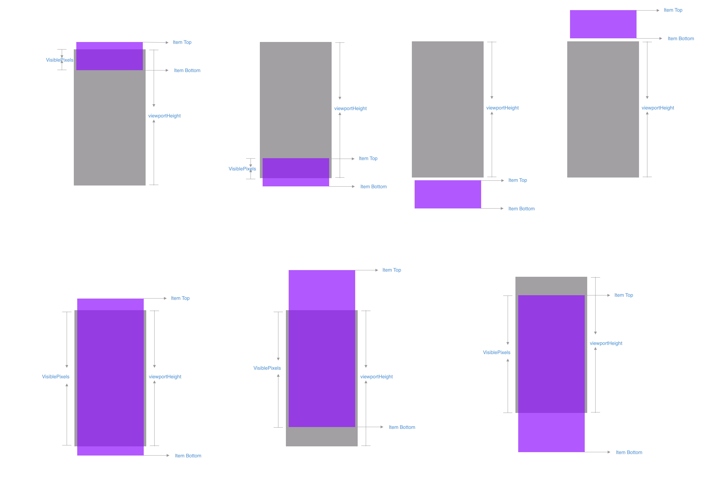
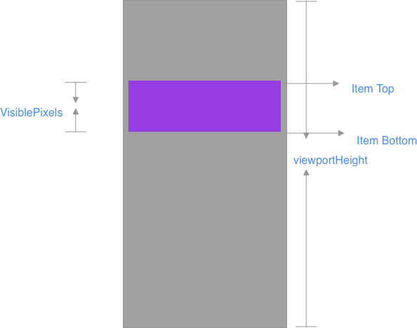

If you want to get viewable items in the [FlatList], you had better take a look at the onViewableItemsChanged prop. For example, suppose you have a video list, and you want automatically play the video when the video is appearing on the screen for a few seconds. In iOS, there is visibleCells in UITableView to achieve this. In React Native, I am glad to tell you that FlatList has a more powerful property, onViewableItemsChanged. This article would help you better understand how to use theonViewableItemsChanged` prop in the [FlatList], and how it works under the hood.
What is onViewableItemsChanged
onViewableItemsChanged is a prop in VirtualizedList and FlatList. When you scroll a FlatList, the items showing on the FlatList change. Then, this function is called, telling you what current viewableItems are and what changed items are.
This function should be used together with viewabilityConfig. A specific onViewableItemsChanged will be called when its corresponding ViewabilityConfig‘s conditions are met.
Here is ViewabilityConfig1
2
3
4
5
6
7
8
9
10
11
12
13
14
15
16
17
18
19
20
21
22
23
24
25
26
27
28export type ViewabilityConfig = {
/**
* Minimum amount of time (in milliseconds) that an item must be physically viewable before the
* viewability callback will be fired. A high number means that scrolling through content without
* stopping will not mark the content as viewable.
*/
minimumViewTime?: number,
/**
* Percent of viewport that must be covered for a partially occluded item to count as
* "viewable", 0-100. Fully visible items are always considered viewable. A value of 0 means
* that a single pixel in the viewport makes the item viewable, and a value of 100 means that
* an item must be either entirely visible or cover the entire viewport to count as viewable.
*/
viewAreaCoveragePercentThreshold?: number,
/**
* Similar to `viewAreaPercentThreshold`, but considers the percent of the item that is visible,
* rather than the fraction of the viewable area it covers.
*/
itemVisiblePercentThreshold?: number,
/**
* Nothing is considered viewable until the user scrolls or `recordInteraction` is called after
* render.
*/
waitForInteraction?: boolean,
|};
Here is the type of onViewableItemsChanged function:1
2
3
4
5
6
7
8
9
10
11
12
13
14
15
16
17
18
19
20 /**
* Called when the viewability of rows changes, as defined by the
* `viewabilityConfig` prop.
*/
onViewableItemsChanged?: ?(info: {
viewableItems: Array<ViewToken>,
changed: Array<ViewToken>,
...
}) => void,
export type ViewToken = {
item: any,
// The key of this item
key: string,
index: ?number,
// indicated whether this item is viewable or not
isViewable: boolean,
section?: any,
...
};
How to use it
Let’s look at two simple example.
1 | viewabilityConfig = { |
Besides, supposed you have to implement different logic for items with 60% viewable region and those with 75% viewable region. You can use viewabilityConfigCallbackPairs, which contains an list of key/value objects, which define different viewability configurations and onViewableItemsChanged callbacks.
1 | <FlatList |
How does onViewableItemsChanged works
Viewable Region
The layout and viewable region information for VirtualizedList is stored in _scrollMetrics object. Through the nativeEvent in onScroll callback, VirtualizedList gets these layout information.
1 | const timestamp = e.timeStamp; |
If it is a vertical VirtualizedList, the layout.layoutMeasurement.height in the nativeEvent is assigned to visibleLength; which is the height of viewable region here. Also, in a vertical VirtualizedList, the layout.layoutMeasurement.height is equal to viewportHeight.

Overview

Different viewabilityConfig in one VirtualizedList
_viewabilityTuples is an array inside VirtualizedList to store ViewabilityHelper/onViewableItemsChanged pairs. This array is initialized in the constructor function.
1 | _viewabilityTuples: Array<ViewabilityHelperCallbackTuple> = []; |
If you define viewabilityConfigCallbackPairs, each viewabilityConfig will be used to initialize a different ViewabilityHelper object.
1 | if (this.props.viewabilityConfigCallbackPairs) { |
ViewabilityHelper is a utility class for calculating viewable items based on the viewabilityConfig and metrics, like the scroll position and layout.
As I mentioned before, in a VirtualizedList could has several ViewabilityHelper objects in _viewabilityTuples, containing different viewabilityConfig to handle different viewability conditions. Let’s take a look at some important props in ViewabilityHelper.
1 | class ViewabilityHelper { |
Items’ layout
In the overview graph, you can see a func _updateViewableItems called in many scenarios. For example, it is called in onScroll callback. Then, It calls viewabilityHelper.onUpdate to find out the viewable items, which appear in the viewport for VirtualizedList.
1 | _updateViewableItems(data: any) { |
this._scrollMetrics.visibleLengthis used asviewportHeightthis._createViewTokenis used to construct aViewTokenobject, which containsitemdata,index,keyandisViewableflag of theitem.- this._getFrameMetrics is a function to get layout information of the item cell by index. The item layout is from
getItemLayoutprop ofVirtualizedListorthis._framesmap.this._framesstores the itemKey/itemLayout pairs.
1 | // this._frames stores the item cell layout info |
- By
this.state, we know the range of the rendered items byfirstandlastvalue.VirtualizedListupdates these two values when the rendered items are changed.
1 | type State = { |
How to find out viewable items
In onUpdate method, it calls computeViewableItems to get viewableIndices. viewableIndices is an array of indexes of the viewable items. So, how does computeViewableItems work?
How to get the indexes of viewable items
In computeViewableItems in the ViewabilityHelper class, it iterates items from ${first} to ${last}. If an item is viewable, it will be stored in an array named viewableIndices.
1 | for (let idx = first; idx <= last; idx++) { |
From the code, we can see the top and bottom value is related to the screen coordinate. I drew a graph to show the relationship between metrics.offset, scrollOffset, metrics.length , top and bottom, to help you better understand the above code.

What kind of item is viewable
An item is said to be viewable when it meets the following conditions
for longer than ${minimumViewTime} milliseconds (after an interaction if waitForInteraction
is true):
the fraction of the item visible in the view area >=
itemVisiblePercentThreshold.
When it comes to the fraction of the item visible in the view area, we need to care about
cases shown in the following graph. RN useMath.min(bottom, viewportHeight) - Math.max(top, 0)to calculate the viewable length.
Entirely visible on screen when the height of a item is bigger than the
viewportHeight.

1 | function _isViewable( |
Timer and Schedule
In onUpdate func in ViewabilityHelper, if we define minimumViewTime value, the _onUpdateSync is scheduled to be called. It is the handler of the timeout.
1 | this._viewableIndices = viewableIndices; |
And, If after a few seconds, ${minimumViewTime}, if some items aren’t longer viewable, the _onUpdateSync func, filter out these indices that have gone out of viewport.
1 | // Filter out indices that have gone out of view after `minimumViewTime` |

In the above graph, at first, the _viewableIndices is from 1 to 9. Then the user scrolls the VirtualizedList and the _onUpdateSync is triggered after minimumViewTime. At this moment, the current _viewableIndices is from 2 to 10. So the item indexed 1 is filtered out.
6. How to get changed items
Comparing with the last time when onViewableItemsChanged is triggered, at this time to trigger onViewableItemsChanged. Some viewable items will be out of the screen, some hidden items will become viewable. In _onUpdateSync function, the preItems map stores the information about previous visible items, the previous means last time when VirtualizedList calls onViewableItemsChanged. Now it has a nextItems map, which stores the information about viewable items this time. Then it figures out the changed items by comparing these two maps. Then, it calls onViewableItemsChanged, passing viewableItems and changed items.
1 | _onUpdateSync( |
scan qr code and share this article